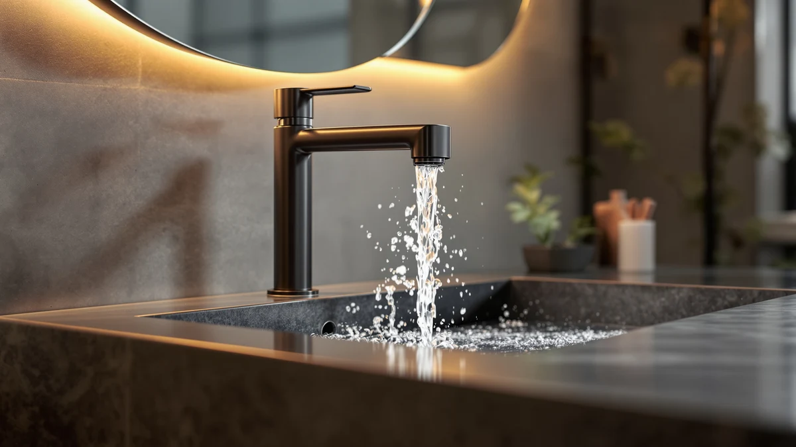

Best Bathroom Faucets for Arthritis of 2026: 7 Top Picks
Prices and picks verified as of August 2026. Independent, reader-supported reviews.


Quick Answer
The best bathroom faucets for arthritis let you turn water on with a single lever or a wave of your hand, so you never have to grip and twist. After comparing seven options, we recommend the Ultimate Unicorn Waterfall Bathroom Sink faucet ($54.90) for its wide, low-force lever. If you cannot replace your faucet, a $8.99 Nuby extender makes your current one far easier to reach.
Our pick: Ultimate Unicorn Waterfall Bathroom Sink — $54.90 Check Price on Amazon
Bottom line: our top pick is the Ultimate Unicorn Waterfall Bathroom Sink Faucet Brushed Nickel at $46.66. The best budget option is the Nuby 2-in-1 Faucet Extenders for Toddlers - 2 Pack - Sink at $8.97.
Things to Know Before You Buy
- Single-handle lever beats two knobs. One lever lets you set flow and temperature in a single move you can push with a forearm or elbow, so painful fingers stay out of it.
- Force matters more than looks. Pick a handle that moves with light pressure. A stiff cartridge will hurt no matter how pretty the faucet is.
- Touchless and pull-down designs remove gripping. A wave-to-start spout or a spray head you pull toward you cuts the reaching and twisting that flares stiff joints.
- Extenders are the no-renovation fix. If you rent or want to spend under $15, a clip-on extender brings water forward without changing your faucet.
- Check your sink holes first. Most of these faucets are single-hole installs. Measure before you buy so the new faucet fits your existing deck.
The best bathroom faucets for arthritis solve one frustrating problem: gripping a small knob and twisting it hurts when your hands are stiff or weak. A round handle forces your fingers into the exact pinch-and-rotate motion that arthritis makes painful, and a faucet that sits too far back makes you reach over the basin every time. You end up dreading something as simple as washing your hands.
You have more good options than you might think, and most cost less than dinner out. A single-handle lever lets you nudge the water on with the side of your hand. A touchless or pull-down faucet removes gripping altogether. And if replacing the faucet is not on the table, a clip-on extender brings the stream forward so you stop straining your wrists and shoulders.
We compared seven faucets and extenders, from a $8.99 Nuby clip-on to a $64.99 pull-down model, and judged each one on how little hand strength it demands. Our pick is the Ultimate Unicorn Waterfall Bathroom Sink faucet, because its wide lever moves with almost no force and you can operate it without curling a single finger. Below we explain who each option suits and where it falls short.
Why You Should Trust Us
I am Ilane Tall, and I cover bathroom hardware for Best Bathroom Faucets. I have spent years sorting through sink fixtures for readers who care less about brand names and more about whether a faucet actually works for their hands and their budget. For this guide, I focused on a single question that the spec sheets ignore: how much grip and force does it take to turn the water on.
I do not run a paid lab or invent expert quotes. I read manufacturer specs, study the design of each handle and spout, and cross-check owner reviews from people who mention arthritis, carpal tunnel, or limited hand strength. When a product has a real drawback, I say so. The Amazon links in this article are affiliate links, which means we may earn a commission if you buy, but that never changes which products we recommend or how we rank them.
To narrow the field, I started with the handle. Anything that needs a tight pinch or a full wrist rotation got cut, so two-knob and round-cap designs were out. I kept single-handle levers, pull-down and pull-out spray heads, and clip-on extenders, because each one reduces the gripping and twisting that stiff joints find painful.
From there I weighed three things. First, the force needed to move the handle, judged from cartridge type and owner feedback. Second, reach, since a spout that sits far back makes you lean and strain. Third, install difficulty, because a faucet you cannot fit yourself is not much help. I also kept a range of prices on the table, from the $8.99 Nuby extender to the $64.99 Ultimate Unicorn pull-down, so this list works whether you are renting or remodeling.
I evaluated each faucet the way a person with sore hands would actually use it. I looked at whether you can start the water with the side of a hand, a closed fist, or a forearm rather than gripping fingers around a knob. For the levers, I checked how far you have to swing the handle and how heavy that motion feels. For the pull-down and pull-out heads, I checked how far the hose reaches so you do not have to lean into the basin.
For the clip-on extenders, I focused on whether they hold position once attached and how far forward they push the stream. I weighed the prices against what you get, and I read through owner reviews for repeat complaints about leaks, loose handles, or finishes that wear. Where a product earned a recurring complaint, I flagged it in the cons so you know the trade-off before you buy.
Our Picks

Ultimate Unicorn Waterfall Bathroom Sink
What we like
- Single lever you can push with the side of a hand or a forearm
- Waterfall spout sits forward, so you do not reach into the basin
- Solid brass body at a fair $54.90
Flaws but not dealbreakers
- The flat lever can feel slippery with wet, soapy hands
- Single-hole only, so it will not fit a 3-hole sink without an adapter
| Material | Brass + finish |
| Size | 4 Inch |
The Ultimate Unicorn Waterfall faucet is our top choice here because it removes the two motions that hurt the most. You set both flow and temperature by nudging one lever, and the lever swings far enough that you can do it with a closed fist or the edge of your hand. No pinching, no twisting, no curling sore fingers around a knob.
The waterfall spout reaches forward over the basin, so you wash under a stream that comes to you instead of leaning to reach water at the back of the sink. The brass body feels substantial for the $54.90 price, and the 4 inch single-hole footprint suits most standard vanities. The one habit to build is wiping the lever dry, since the flat top can get slick when it is soapy. For a faucet that handles grip, force, and reach in one fixture, this is the one we would put in our own bathroom.

KPWATER Bathroom Sink Faucets 2/3
What we like
- Smooth single lever that moves with light pressure
- Costs just $19.99, the lowest price for a full faucet here
- Compact 3.84 x 9.5 x 3.6 inch body fits tight vanities
Flaws but not dealbreakers
- Lighter build than our top pick, so it feels less premium
- Shorter spout means less forward reach over the basin
| Material | Brass + finish |
| Size | 3.84 x 9.5 x 3.6 inches |
The KPWATER is our runner-up, and it earns that spot on value. At $19.99 you get the same arthritis-friendly idea as our top pick, a single lever you push instead of a knob you twist, for roughly a third of the price. The lever moves with light pressure, so a flare-up day does not make washing your hands a chore.
Its brass body measures 3.84 x 9.5 x 3.6 inches, which makes it a tidy fit for smaller or older vanities. The trade-offs are modest. The faucet feels lighter in the hand than the Ultimate Unicorn, and the shorter spout does not reach as far forward, so you lean in a little more. For anyone watching the budget who still needs an easy lever, this is the faucet to start with.

Nuby 2-in-1 Faucet Extenders for
What we like
- Clips on in seconds with no tools and no plumbing
- Brings the water stream forward and down toward you
- At $8.99, the cheapest fix in this guide
Flaws but not dealbreakers
- Does nothing for a stiff handle, it only changes where water lands
- Fit depends on your spout shape, so check the size before buying
| Material | Brass + finish |
| Size | — |
The Nuby 2-in-1 extender is the pick for people who cannot or do not want to change their faucet. It clips onto your existing spout and pushes the water forward and lower, so you stop reaching deep into the basin or cupping your hands under a short faucet. There are no tools, no shutoff valves, and no plumbing involved, which matters when twisting fittings is exactly what your hands cannot do.
At $8.99 it is the least expensive way to make a hard-to-reach sink usable again, and it installs in seconds. Be clear about what it does and does not do. It changes where the water comes out, but it will not loosen a stiff handle, so pair it with a touchless setup or an easy lever if turning the water on is the painful part. Confirm it suits your spout shape before ordering, since fit varies by faucet.

FORIOUS Black Bathroom Faucet 3
What we like
- Single lever that takes light force to move
- Matte black brass finish that hides water spots and fingerprints
- Looks like a designer faucet for $55.98
Flaws but not dealbreakers
- Matte finish needs a soft cloth, since gritty cleaners can mar it
- Single-hole mount, so confirm your sink matches
| Material | Brass + finish |
| Size | — |
The FORIOUS proves that an arthritis-friendly faucet does not have to look clinical. It uses the same single-lever design that makes a faucet easy on sore hands, a handle you push rather than a knob you grip, and wraps it in a matte black brass finish that suits a modern vanity. The lever moves with light pressure, so it is gentle on sore hands while still looking the part.
At $55.98 it sits close to our top pick on price, and the choice between them mostly comes down to style and reach. The matte black hides water spots and fingerprints well, though you should clean it with a soft cloth and skip abrasive scrubs so the finish stays even. Like the others, it is a single-hole faucet, so measure your sink before ordering. If looks matter to you as much as easy use, this is the budget pick that does not feel like a compromise.

Ultimate Unicorn Pull Down Bathroom
What we like
- Pull-down spray head brings water to you instead of you reaching
- Single lever on top, so you still avoid gripping a knob
- Brass body with a 4 inch footprint
Flaws but not dealbreakers
- At $64.99 it is the priciest faucet here
- The hose and docking magnet add parts that can wear over years
| Material | Brass + finish |
| Size | 4 Inch |
The Ultimate Unicorn pull-down earns its place when reach is the real problem. Instead of leaning over the basin, you pull the spray head toward you and rinse your hands, a toothbrush, or a face cloth wherever it is comfortable. That removes the shoulder and back strain that a fixed spout forces on you several times a day.
It keeps a single lever on top for flow and temperature, so you still avoid the pinch-and-twist motion that hurts. The brass body and 4 inch footprint match our top pick, and the difference is the flexible head. The cost is the highest in this guide at $64.99, and a pull-down adds a hose and a docking magnet, which are extra parts that can loosen after years of use. If reaching is what makes your current faucet painful, the convenience is worth it.

Pull Out LED Bathroom Faucet
What we like
- LED changes color with water temperature, so you avoid scalds
- Pull-out spray head brings water toward you
- Brass body, no batteries needed since the light runs on water flow
Flaws but not dealbreakers
- The novelty light is not for everyone's taste
- Pull-out hose adds a part that can wear over time
| Material | Brass + finish |
| Size | — |
The KaiwayInno pull-out LED faucet adds a safety feature the others lack. Reduced sensation in the hands can make it hard to judge water heat, and this faucet lights up in a color that tracks the temperature, so you see at a glance whether the water is cold, warm, or hot before you put your hands under it. The light runs on water flow, so there are no batteries to change.
The spray head pulls out toward you, which cuts the reaching that bothers stiff joints, and the brass body feels sturdy for the $59.99 price. The drawbacks are minor. The glowing spout is a love-it-or-leave-it look, and like any pull-out design it adds a hose that can wear over the years. If a scald warning would give you peace of mind, this faucet earns its spot.

Skyroku Duck-Tastic Faucet Extender for
What we like
- Clips on without tools and pushes water forward
- Duck shape makes the sink easier and friendlier for grandkids
- Affordable at $14.99
Flaws but not dealbreakers
- The playful look will not suit every bathroom
- Like any extender, it changes water flow, not handle stiffness
| Material | Brass + finish |
| Size | — |
The Skyroku Duck-Tastic is the second extender here, and it suits a shared family bathroom. It clips onto a standard spout with no tools and redirects the stream forward and down, so you stop reaching into the basin. The duck shape is more than a gimmick in a home with grandkids, since it brings water within reach for small hands too and makes washing up easier for everyone who uses that sink.
At $14.99 it costs a few dollars more than the plain Nuby, and you are paying for the friendly design. Keep its limits in mind. An extender changes where the water comes out, not how hard the handle is to turn, so combine it with an easy lever if gripping the knob is the painful part. If you want a low-cost fix that the whole household will use, this one earns a place by the sink.
Quick Comparison
| Product | Material | Price | Rating | Best for | Get it |
|---|---|---|---|---|---|
| Ultimate Unicorn Waterfall Bathroom Sink | Brass + finish | $54.90 | 4 | Best overall, easy lever | View on Amazon → |
| KPWATER Bathroom Sink Faucets 2/3 | Brass + finish | $19.99 | 4 | Best value lever faucet | View on Amazon → |
| Nuby 2-in-1 Faucet Extenders for | Brass + finish | $8.99 | 4 | Cheapest no-swap fix | View on Amazon → |
| FORIOUS Black Bathroom Faucet 3 | Brass + finish | $55.98 | 4 | Best-looking lever, matte black | View on Amazon → |
| Ultimate Unicorn Pull Down Bathroom | Brass + finish | $64.99 | 4 | Limited reach, pull-down | View on Amazon → |
| Pull Out LED Bathroom Faucet | Brass + finish | $59.99 | 4 | Temperature safety, pull-out | View on Amazon → |
| Skyroku Duck-Tastic Faucet Extender for | Brass + finish | $14.99 | 4 | Shared family bathroom | View on Amazon → |
What type of bathroom faucet is easiest to use with arthritis?
A single-handle lever faucet is the easiest for most people with arthritis, because you can push it with the side of your hand, a forearm, or even an elbow instead of gripping and twisting.
Are touchless faucets worth it for arthritis?
Yes, if your hands hurt during a flare or your grip gives out, a touchless or motion-activated faucet lets you start the water by waving a hand near the spout, so you never grip a handle.
The Competition
When we narrowed the field, several common designs did not make the cut. Two-handle widespread faucets are the biggest group we skipped. They look classic, but they force you to grip and twist two separate knobs, which is the exact motion arthritis makes painful, so they fail the test before we even check the build.
We also passed on cross-handle and small round-cap faucets for the same reason. Those shapes give your fingers nothing easy to push and demand a firm pinch to turn. Premium motion-sensor faucets from major brands are genuinely easy to use, but most run well over $150 and need batteries or hardwiring, so we left them off a budget-focused list. Finally, we considered cheap single-handle faucets under $15, but the ones we looked at used stiff cartridges that defeat the whole point, since a hard-to-move lever is no better than a knob for sore hands.